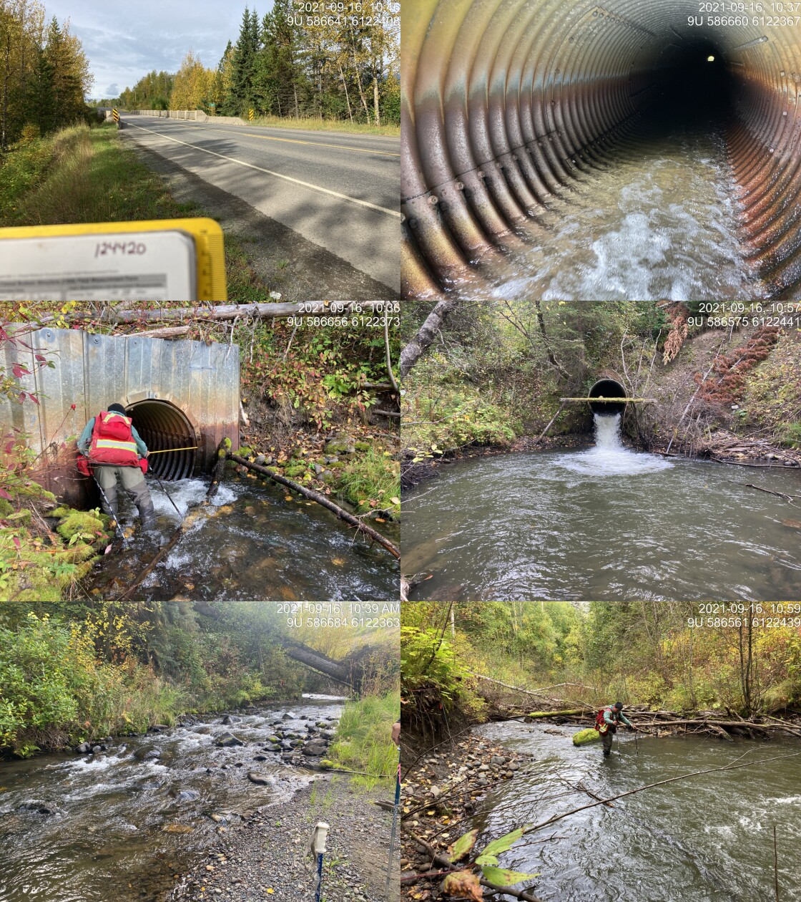
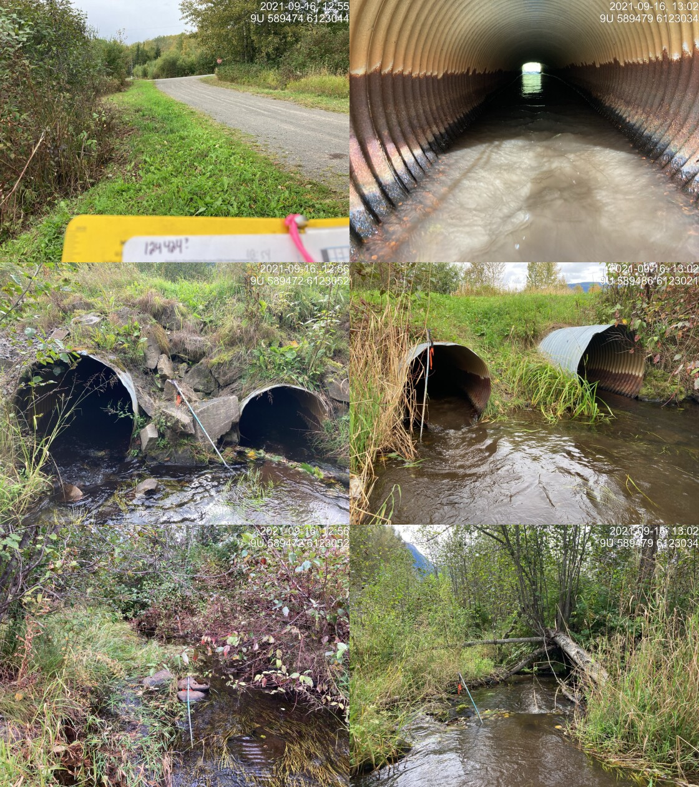

Station Creek - 124420 & 124421 & 124422 - Appendix
Site Location
PSCIS crossing 124420 was located on Station Creek at Hazleton, BC. Station Creek is also known locally as Mission Creek. PSCIS crossing 124420 is located on Highway 16. Crossing 124420 was located 1.8km upstream from the confluence with the Bulkley River. Crossing 124420 is the responsibility of the Ministry of Transportation and Infrastructure.
Background
At crossing 124420, Station Creek is a fourth order stream with a watershed area upstream of the crossing of approximately 28.6km2. The elevation of the watershed ranges from a maximum of 2171m to 211m near the crossing (Table 5.17). Upstream of crossing 124420, cutthroat trout, pink salmon, coho salmon, rainbow trout, bull trout, and dolly varden have previously been recorded (MoE 2020b; Norris 2020).
Wilson and Rabnett (2007) report that the crossing structure located on Highway 16 and Station Creek has been the subject of numerous assessments and designs with respect to the rehabilitation of fish passage, and they rated this crossing as the highest priority for rehabilitation in the Bulkley River watershed. Gitxsan Watershed Authority reports that Xsan Xsagiibil was a fishing site located at the mouth of Station Creek (Xsi Gwin Sagiiblax) (Wilson and Rabnett 2007). Identified as a high priority for additional assessments by K. Rabnett and Williams (2004), SKR Consultants Ltd. (2006) conducted a detailed inspection, offered rehabilitation design options and identified the natural limits of potential fish distribution to support rehabilitation efforts. At the time of reporting, a design for remediation utilizing a retrofit of the existing structure to backwater the pipe was being drafted (Sean Wong, Environmental Programs Manager - Ministry of Transportation and Infrastructure pers. comm.).
A trap and truck operation led by the Chicago Creek Community Environmental Enhancement Society moves coho from a fence set up near the confluence with the Bulkley River to upstream of Highway 16 on Waterfall Creek annually. Houlden, Houlden, and Donas (2001) report that the coho stocks in the system were wiped out in the late 1970s by the improper installation of PSCIS crossing 124420. The Waterfall Creek Stream Rehabilitation Project began in 1990 to reintroduce coho to the stream with surplus stocks transplanted from Toboggan Creek near Smithers. In 1993 the Hazelton Elementary Streamkeepers program was developed to assist with the project and in 1995 the Chicago Creek Community Environmental Enhancement Society was incorporated to develop a hatchery nearby. The hatchery no longer operates but operations were considered successful with coho runs between 65 - 297 fish documented between 1998 - 2001 Watershed restoration and enhancement efforts were coordinated with other groups working in the system (Houlden, Houlden, and Donas 2001; Houlden and Donas 2002).
Following stream morphology changes which occurred during a fall 2017 flood event causing the release and distribution of sediment loads, Newman and England (2018) conducted a fish habitat assessment from the confluence of Station Creek with the Bulkley River upstream to the Mile 48 Canadian National railway crossing to determine stream diversity, spawning gravel catchment areas, beaver dam activity and negative impacts present in or along the stream. Beaver control activities on Station and Waterfall Creeks by CN Rail upstream of crossing 124420 may have been the cause of the 2017 flood event (pers comm. Brenda Donas, Chicago Creek Restoration Society).
fpr::fpr_table_wshd_sum(site_id = my_site) %>%
fpr::fpr_kable(caption_text = paste0('Summary of derived upstream watershed statistics for PSCIS crossing ', my_site, '.'),
footnote_text = 'Elev P60 = Elevation at which 60% of the watershed area is above',
scroll = F)| Site | Area Km | Elev Site | Elev Min | Elev Max | Elev Median | Elev P60 | Aspect |
|---|---|---|---|---|---|---|---|
| 124420 | 28.6 | 301 | 211 | 2171 | 521 | 425 | NNE |
| * Elev P60 = Elevation at which 60% of the watershed area is above |
PSCIS stream crossing 124420 was ranked as a high priority for follow up by Wilson and Rabnett (2007), McCarthy and Fernando (2015), Irvine (2018) and Mazany-Wright et al. (2021) because of known high value spawning and rearing habitat upstream of the crossing. A summary of habitat modelling outputs is presented in Table 5.18. A map of the watershed is provided in map attachment 093M.106. There are numerous stream crossings located on tributaries to Station Creek with crossing 124421 and 124422 also assessed in 2021.
| Habitat | Potential | Remediation Gain | Remediation Gain (%) |
|---|---|---|---|
| ST Network (km) | 26.3 | 14.2 | 54 |
| ST Lake Reservoir (ha) | 6.5 | 2.0 | 31 |
| ST Wetland (ha) | 73.9 | 56.5 | 76 |
| ST Slopeclass03 Waterbodies (km) | 3.4 | 0.0 | 0 |
| ST Slopeclass03 (km) | 11.1 | 6.5 | 59 |
| ST Slopeclass05 (km) | 5.2 | 1.0 | 19 |
| ST Slopeclass08 (km) | 4.1 | 3.0 | 73 |
| ST Spawning (km) | 5.3 | 3.0 | 57 |
| ST Rearing (km) | 8.5 | 5.0 | 59 |
| CH Spawning (km) | 5.3 | 3.0 | 57 |
| CH Rearing (km) | 8.4 | 5.0 | 60 |
| CO Spawning (km) | 6.5 | 4.2 | 65 |
| CO Rearing (km) | 9.3 | 5.8 | 62 |
| CO Rearing (ha) | 28.3 | 0.0 | 0 |
| SK Spawning (km) | 0.0 | 0.0 | – |
| SK Rearing (km) | 0.0 | 0.0 | – |
| SK Rearing (ha) | – | 0.0 | – |
| All Spawning (km) | 6.5 | 4.2 | 65 |
| All Rearing (km) | 9.3 | 5.8 | 62 |
| All Spawning Rearing (km) | 9.3 | 5.8 | 62 |
| * Model data is preliminary and subject to adjustments. |
Stream Characteristics at Crossings
At the time of the survey, PSCIS crossing 124420 was un-embedded, non-backwatered and ranked as a barrier to upstream fish passage according to the provincial protocol (MoE 2011b) (Table 5.19). Water temperature was 8\(^\circ\)C, pH was 7.9 and conductivity was 89uS/cm.
PSCIS crossing 124421 on Waterfall Creek was un-embedded, non-backwatered and ranked as a barrier to upstream fish passage according to the provincial protocol (MoE 2011b) (Table 5.20).
PSCIS crossing 124422 on Waterfall Creek was un-embedded, 100% backwatered and ranked as a barrier to upstream fish passage according to the provincial protocol (MoE 2011b) (Table 5.21).
Surveys were conducted with a remotely piloted aircraft upstream of the crossing with resulting images stitched into an orthomosaic and 3-dimensional model presented in Figures 5.22 - 5.23.
| Location and Stream Data |
|
Crossing Characteristics | – |
|---|---|---|---|
| Date | 2021-09-16 | Crossing Sub Type | Round Culvert |
| PSCIS ID | 124420 | Diameter (m) | 1.6 |
| External ID | – | Length (m) | 90 |
| Crew | KP DN | Embedded | No |
| UTM Zone | 9 | Depth Embedded (m) | – |
| Easting | 586632.3 | Resemble Channel | No |
| Northing | 6122395 | Backwatered | No |
| Stream | Station Creek | Percent Backwatered | – |
| Road | Highway 16 | Fill Depth (m) | 9.99 |
| Road Tenure | New Hazelton Highway | Outlet Drop (m) | 0.8 |
| Channel Width (m) | 5.6 | Outlet Pool Depth (m) | 1.6 |
| Stream Slope (%) | 2 | Inlet Drop | Yes |
| Beaver Activity | No | Slope (%) | 3.5 |
| Habitat Value | Medium | Valley Fill | Deep Fill |
| Final score | 42 | Barrier Result | Barrier |
| Fix type | Replace with New Open Bottom Structure | Fix Span / Diameter | 30 |
| Photos: From top left clockwise: Road/Site Card, Barrel, Outlet, Downstream, Upstream, Inlet. | |||
| Comments: Majority of culvert is ~3% however last 5 m steepens to 6-7%, appears to be because exposed section is bending from weight of water. Fill depth ~24m. Huge pool appears it would require a lot of material to backwater and build up. 10:30 |
| Location and Stream Data |
|
Crossing Characteristics | – |
|---|---|---|---|
| Date | 2021-09-16 | Crossing Sub Type | Round Culvert |
| PSCIS ID | 124421 | Diameter (m) | 1 |
| External ID | – | Length (m) | 15 |
| Crew | KP | Embedded | No |
| UTM Zone | 9 | Depth Embedded (m) | – |
| Easting | 589466.5 | Resemble Channel | No |
| Northing | 6123042 | Backwatered | No |
| Stream | Tributary to Waterfall Creek | Percent Backwatered | – |
| Road | 11th Ave | Fill Depth (m) | 1.5 |
| Road Tenure | New Hazelton Local | Outlet Drop (m) | 0.3 |
| Channel Width (m) | 2.6 | Outlet Pool Depth (m) | 0.27 |
| Stream Slope (%) | 1 | Inlet Drop | Yes |
| Beaver Activity | No | Slope (%) | 1 |
| Habitat Value | Medium | Valley Fill | Deep Fill |
| Final score | 34 | Barrier Result | Barrier |
| Fix type | Replace with New Open Bottom Structure | Fix Span / Diameter | 10 |
| Photos: From top left clockwise: Road/Site Card, Barrel, Outlet, Downstream, Upstream, Inlet. | |||
| Comments: Bent in middle from road weight. Inlet drop of 0.10 for both pipes. Slow steady flow almost wetland habitat above and below. Water is high. 12:54 |
| Location and Stream Data |
|
Crossing Characteristics | – |
|---|---|---|---|
| Date | 2021-09-16 | Crossing Sub Type | Round Culvert |
| PSCIS ID | 124422 | Diameter (m) | 1.2 |
| External ID | – | Length (m) | 45 |
| Crew | KP | Embedded | No |
| UTM Zone | 9 | Depth Embedded (m) | – |
| Easting | 589499.9 | Resemble Channel | No |
| Northing | 6123162 | Backwatered | Yes |
| Stream | Tributary to Waterfall Creek | Percent Backwatered | 25 |
| Road | Highway 16 | Fill Depth (m) | 6 |
| Road Tenure | New Hazelton Arterial | Outlet Drop (m) | 0 |
| Channel Width (m) | 5.2 | Outlet Pool Depth (m) | 0 |
| Stream Slope (%) | 5.2 | Inlet Drop | Yes |
| Beaver Activity | Yes | Slope (%) | 1.5 |
| Habitat Value | Medium | Valley Fill | Deep Fill |
| Final score | 27 | Barrier Result | Barrier |
| Fix type | Replace with New Open Bottom Structure | Fix Span / Diameter | 19 |
Photos: From top left clockwise: Road/Site Card, Barrel, Outlet, Downstream, Upstream, Inlet.
|
|||
| Comments: 2 pipes. Both have water, left bank one is flowing. Assessment comments indicate right bank pipe is backwatered 100% but changed to 25% based on photos and past PSCIS data and photos which also indicated not backwatered. Suspect blockage due to debris. Outlet water depth, fish sighted in outlet of right barrel. 13:42 |
model_url <- '<iframe src="https://www.mapsmadeeasy.com/maps/public/8f568e62bb7d47568e1f0a365022ef59" scrolling="no" title="Maps Made Easy" width="100%" height="600" frameBorder ="0"></iframe>'
knitr::asis_output(model_url)my_photo = 'fig/pixel.png'
my_caption = paste0('Orthomosaic of habitat upstream of crossing 124420 on Station Creek showing both Station Creek (south) and Waterfall Creek (north) habitat. To zoom press "shift" and scroll.')
knitr::include_graphics(my_photo, dpi = NA)Figure 5.22: Orthomosaic of habitat upstream of crossing 124420 on Station Creek showing both Station Creek (south) and Waterfall Creek (north) habitat. To zoom press “shift” and scroll.
model_url <- '<iframe src="https://www.mapsmadeeasy.com/maps/public_3D/8f568e62bb7d47568e1f0a365022ef59" scrolling="no" title="Maps Made Easy" width="100%" height="600" frameBorder ="0"></iframe>'
knitr::asis_output(model_url)my_photo = 'fig/pixel.png'
my_caption = paste0('3D model of habitat upstream of crossing 124420 on Station Creek showing both Station Creek (south) and Waterfall Creek (north) habitat. To zoom press "shift" and scroll.')
knitr::include_graphics(my_photo, dpi = NA)Figure 5.23: 3D model of habitat upstream of crossing 124420 on Station Creek showing both Station Creek (south) and Waterfall Creek (north) habitat. To zoom press “shift” and scroll.
Stream Characteristics Downstream of 124420
The stream was surveyed downstream from the culvert for 375m (Figures 5.24 - 5.25). Total cover amount was rated as with large woody debris dominant. Cover was also present as small woody debris, boulders, and overhanging vegetation (Table 5.22). The average channel width was 6.1m, the average wetted width was 4.6m and the average gradient was 2.1%. The dominant substrate was gravels with cobbles subdominant. Survey notes indicate a complex system with deeply undercut banks with steep sections and confined areas. Segments of stream showed signs of erosion and deposition of fine sediments. Multiple areas with braided channels around woody debris and evidence of large fluctuations in flow were noted. The habitat was rated as high value for salmonid rearing and spawning. The reader is referred to Newman and England (2018) for addition information on habitat containing more detail.
Stream Characteristics Upstream of 124420 and downstream of 124421
The stream was surveyed immediately upstream from 124420 for approximately 370m (Figures 5.26 - 5.27). Within the area surveyed, total cover amount was rated as with large woody debris dominant. Cover was also present as small woody debris, undercut banks, deep pools, and overhanging vegetation (Table 5.22). The average channel width was 5.7m, the average wetted width was 4.7m and the average gradient was 2%. The dominant substrate was cobbles with gravels subdominant. There were frequent pockets of gravels suitable for spawning throughout with high value spawning habitat in upper end of the survey area. Habitat value was rated as high value for resident salmonid rearing and spawning. The reader is referred to Newman and England (2018) for addition information on habitat in this area.
A small bridge (modelled crossing 24704553 - a.k.a Mile 48) is located under the CN Railway approximately 875m upstream of the highway.
At approximately 1200m upstream of Highway 16, Waterfall Creek enters into station Creek. In addition to the survey via drone, Waterfall Creek was assessed immediately upstream of the confluence with Station Creek for 430m (Figures 5.28 - 5.29) The dominant substrate was fines with gravels sub-dominant.The average channel width was 6.2m, the average wetted width was 5.5m, and the average gradient was 0.5%.Total cover amount was rated as abundant with instream vegetation dominant. Cover was also present as undercut banks, deep pools, and overhanging vegetation. The area assessed included slow flowing wetland type habitat with generally shallow glide type habitat and significant quantities of instream vascular vegetation. Habitat value for areas surveyed was rated as high value as the area could provide significant amounts of rearing habitat for juvenile rainbow and coho.
Crossing 1803294 is modeled on Waterfall Creek at a location approximately 2.6km upstream of Highway 16 crossing 124420 and approximately 965m downstream of PSCIS crossing 124421. This site was not assessed in the field and data regarding this crossing has not previously been loaded to PSCIS. Access to this location should by possible by wading across Waterfall Creek from access on the railway line. At the time of assessment, the road leading to the crossing from the north was behind a gated area on private land.
PSCIS crossing 124424 is located under the railway line approximately 55m downstream of 11th avenue where PSCIS crossing 124421 is located. PSCIS records indicate this crossing was non-embedded and 100% backwatered. Although ranking as a barrier according to the provincial protocol, 100% backwatered crossings are seldom an issue for fish passage for any lifestage or species. Upstream of 124424 the stream was assessed to PSCIS crossing 124421.Total cover amount was rated as moderate with instream vegetation dominant. Cover was also present as deep pools and overhanging vegetation.The average channel width was 6.7m, the average wetted width was 11.9m, and the average gradient was 0.6%.The dominant substrate was fines with gravels sub-dominant. Survey notes indicate that below the crossing the water enters a wetland type complex dense in grasses and shrubs. Deep water and dense instream vegetation were present with the wetland/stream running relatively straight and parallel to the railway. Water depth was estimated at ~1.5m near the stream edge. Habitat value was rated as moderate with surveyor notes indicating a defined channel that widens into a small wetland complex dominated by tall grasses and significant instream vegetation.
Stream Characteristics Upstream of 124421 and downstream of 124422
The stream was surveyed upstream from crossing 124421 for 120m to 124422 (Figures 5.30 - 5.31). The average channel width was 2.6m, the average wetted width was 2.5m, and the average gradient was 1%.Total cover amount was rated as abundant with instream vegetation dominant. Cover was also present as small woody debris, undercut banks, and overhanging vegetation.The dominant substrate was fines with gravels sub-dominant. Survey notes indicate a slow moving wetland like stream with deep glides throughout. Instream vegetation was abundant with somewhat stagnant water often smelling of sulfur. Near top of the survey, the gradient increased slightly and the substrate transitioned from primarily fines to small gravel. Within the riparian area shrubs and sedges were thick and vigorous. Habitat value was rated as moderate as the this section of stream was considered an important migration corridor.
Stream Characteristics Upstream of 124422
The stream was surveyed upstream from crossing 124422 for 350m (Figures 5.32 - 5.33). Total cover amount was rated as abundant with instream vegetation dominant. Cover was also present as small woody debris, undercut banks, and overhanging vegetation.The average channel width was 6.7m, the average wetted width was 6.6m, and the average gradient was 1%.The dominant substrate was fines with gravels sub-dominant. Within this section of stream there appears to have been restorative efforts involving the placement of logs to provide riffle pool breaks and retain gravel suitable for coho spawning. Gravels were abundant in this area and it’s location within a residential area of New Hazelton provides an important connection between the stream and the surrounding community. Habitat value was rated as moderate as the this section of stream was considered critical for coho spawning.
Structure Remediation and Cost Estimate
Should restoration/maintenance activities proceed, replacement of PSCIS crossing 124420 with a bridge (30m span) is recommended. The cost of the work is estimated at $27,000,000 for a cost benefit of 0.3 linear m/$1000 and 2 m2/$1000. These cost benefit estimates assume that adult coho spawner passage through 124420 will result in passage through upstream crossings which rank as barriers according to the provincial metric but are likely to be passable to adult coho.
# The cost of the work is estimated at \$`r format(my_cost_estimate() %>% pull(cost_est_1000s) * 1000, big.mark = ',')` for a cost benefit of `r as.character(my_cost_estimate() %>% pull(cost_net))` linear m/\$1000 and `r as.character(my_cost_estimate() %>% pull(cost_area_net))`m^2^/\$1000. Conclusion
There was 9.3km of habitat modelled upstream of crossing 124420 with areas surveyed rated as high value for salmonid rearing and spawning. Crossing 124420 was ranked as a high priority for proceeding to design for replacement. At the time of reporting, the Ministry of Transportation and Infrastructure was in the process of developing a design to retrofit the existing structure at 124420 with some sort of backwatering mechanism so that it could pass adult coho spawners. Although, backwatering can be considered an interim solution, replacement of this crossing with an open bottom structure is recommended in the long term.
Station and Waterfall Creeks are located directly within the community of New Hazelton and there is a rich history of community efforts to help restore coho stocks and enhance the habitat in the system. This location and history provide importing context for the connection between the community, the Gitsxan, the salmon and the watershed. Station Creek is a unique opportunity for CP Rail, the Ministry of Transportation and Infrastructure, DFO, the Chicago Creek Community Environmental Enhancement Society, the community of New Hazelton, the Gitsxan and other to work together for meaningful restorative actions.
tab_hab_summary %>%
filter(Site == my_site |
Site == my_site2 |
Site == my_site3 ) %>%
# select(-Site) %>%
fpr::fpr_kable(caption_text = paste0('Summary of habitat details for PSCIS crossing ', my_site, ', ', my_site2, ' and ', my_site3, '.'),
scroll = F) | Site | Location | Length Surveyed (m) | Channel Width (m) | Wetted Width (m) | Pool Depth (m) | Gradient (%) | Total Cover | Habitat Value |
|---|---|---|---|---|---|---|---|---|
| 124420 | Downstream | 375 | 6.1 | 4.6 | 0.5 | 2.1 | abundant | high |
| 124420 | Upstream | 370 | 5.7 | 4.7 | 0.5 | 2.0 | abundant | high |
| 124420 | Upstream2 | 430 | 6.2 | 5.5 | – | 0.5 | abundant | high |
| 124421 | Downstream | 50 | 1.6 | 1.5 | – | 1.0 | – | moderate |
| 124421 | Upstream | 120 | 2.6 | 2.5 | 0.3 | 1.0 | abundant | moderate |
| 124422 | Upstream | 350 | 6.7 | 6.6 | – | 1.0 | abundant | moderate |
my_photo1 = fpr::fpr_photo_pull_by_str(str_to_pull = '_d1_')
my_caption1 = paste0('Typical habitat downstream of PSCIS crossing ', my_site, '.')
# fpr::fpr_photo_flip(site_id = 1802488, str_to_pull = '6257')Figure 5.24: Typical habitat downstream of PSCIS crossing 124420.
my_photo2 = fpr::fpr_photo_pull_by_str(str_to_pull = '_d2_')
my_caption2 = paste0('Typical habitat downstream of PSCIS crossing ', my_site, '.')Figure 5.25: Typical habitat downstream of PSCIS crossing 124420.
my_caption <- paste0('Left: ', my_caption1, ' Right: ', my_caption2)
knitr::include_graphics(my_photo1)
knitr::include_graphics("fig/pixel.png")
knitr::include_graphics(my_photo2)my_photo1 = fpr::fpr_photo_pull_by_str(str_to_pull = '_u1_')
my_caption1 = paste0('Habitat upstream of PSCIS crossing ', my_site, '.')Figure 5.26: Habitat upstream of PSCIS crossing 124420.
my_photo2 = fpr::fpr_photo_pull_by_str(str_to_pull = '_u2_')
my_caption2 = paste0('Habitat upstream of PSCIS crossing ', my_site, '.')Figure 5.27: Habitat upstream of PSCIS crossing 124420.
my_caption <- paste0('Left: ', my_caption1, ' Right: ', my_caption2)
knitr::include_graphics(my_photo1)
knitr::include_graphics("fig/pixel.png")
knitr::include_graphics(my_photo2)my_photo1 = fpr::fpr_photo_pull_by_str(str_to_pull = '_u3_')
my_caption1 = paste0('Habitat upstream of PSCIS crossing ', my_site, '.')Figure 5.28: Habitat upstream of PSCIS crossing 124420.
my_photo2 = fpr::fpr_photo_pull_by_str(str_to_pull = '_u4_')
my_caption2 = paste0('Habitat upstream of PSCIS crossing ', my_site, ' within Waterfall Creek.')Figure 5.29: Habitat upstream of PSCIS crossing 124420 within Waterfall Creek.
my_caption <- paste0('Left: ', my_caption1, ' Right: ', my_caption2)
knitr::include_graphics(my_photo1)
knitr::include_graphics("fig/pixel.png")
knitr::include_graphics(my_photo2)my_photo1 = fpr::fpr_photo_pull_by_str(site = my_site2, str_to_pull = '_d1_')
my_caption1 = paste0('Typical habitat upstream of PSCIS crossing ', my_site, '.')Figure 5.30: Typical habitat upstream of PSCIS crossing 124420.
my_photo2 = fpr::fpr_photo_pull_by_str(site = my_site2, str_to_pull = '_u1_')
my_caption2 = paste0('Typical habitat upstream of PSCIS crossing ', my_site, '.')
Figure 5.31: Typical habitat upstream of PSCIS crossing 124420.
my_caption <- paste0('Left: ', my_caption1, ' Right: ', my_caption2)
knitr::include_graphics(my_photo1)
knitr::include_graphics("fig/pixel.png")
knitr::include_graphics(my_photo2)my_photo1 = fpr::fpr_photo_pull_by_str(site = my_site3, str_to_pull = '_u1_')
my_caption1 = paste0('Typical habitat upstream of PSCIS crossing ', my_site, '.')Figure 5.32: Typical habitat upstream of PSCIS crossing 124420.
my_photo2 = fpr::fpr_photo_pull_by_str(site = my_site3, str_to_pull = '_u2_')
my_caption2 = paste0('Typical habitat upstream of PSCIS crossing ', my_site, '.')Figure 5.33: Typical habitat upstream of PSCIS crossing 124420.
my_caption <- paste0('Left: ', my_caption1, ' Right: ', my_caption2)
knitr::include_graphics(my_photo1)
knitr::include_graphics("fig/pixel.png")
knitr::include_graphics(my_photo2)